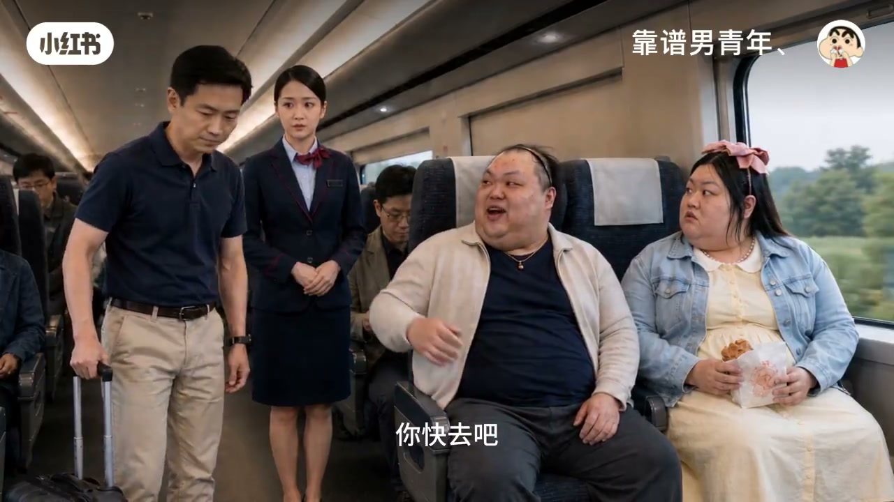
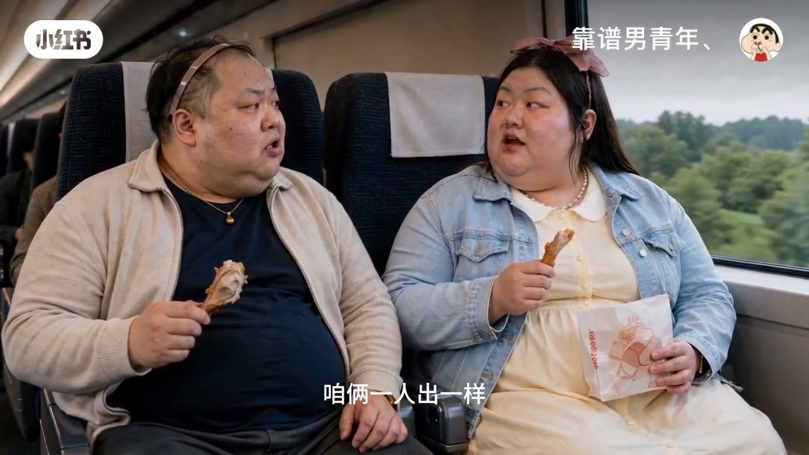

内容要点
一支 3 分 30 秒的恋爱短剧。场景是高铁车厢：女主的票只买到城河段，被持全程票的乘客要求让座，双方僵持不下。男友全程看似和稀泥，实际一直在帮女主分析，最后用「差价升级一等座」+「补票」两个动作化解矛盾。结尾两人互怼拌嘴、分食鸡腿，把甜蜜藏在日常里。
知识结构
女主的票只买到城河，被票到终点站的乘客要求让座。女主坚持先来后到不肯让，双方陷入僵局。男友提「两张票平均一下」遭对方反驳。
乘警确认票已过站，要求让座并提示可补票。男友顺势提出「差价我出，给你换到一等座」，先让局势软下来，再顺手把女主的票补到终点。
女主质疑男友刚才帮外人说话，男友解释「我说的是票，又没说你」。两人用「平均」互相打趣分鸡腿，最后男友把东西都塞给女主：「堵住你的嘴」。
短剧的核心冲突设计：占理的一方也要让步艺术。男友用「升舱补差价」四两拨千斤——先给对方台阶，再解决问题，最后用嘴硬心软的互怼关系收尾。文案金句：「你出钱我出鸡腿，咱俩一人出一样，哪里不平均？」
00:00-00:54座位之争爆发
「你好，麻烦让一下。08F 是我的。」开场即冲突：女主的票只买到城河，座位被持全程票的乘客要走。
「可你的票只买到城河，刚才已经到站了。」「票到站了，座位又没下车。」女主据理力争：「总得有个先来后到吧。」
男友站出来和稀泥：「咱俩的票一起买的。你那张坐得长、我这张坐得短，平均一下，不就都能到城河了吗？」对方回怼：「车票怎么平均？你们俩怎么平均是你们的事，不能平均我的座位。」
00:54-02:14乘警介入与升级一等座
女主一句「多大点事还叫人」，男友接「这事有你一个就够大了」。乘务员闻声而来，要求出示车票。
「您的票到城河，现在已经过站了，这个位置属于这位旅客，请您先让座。」「我可以帮您查询后续能不能补票，但您必须先把座位让出来。」
女主纠结：「我一起来他一坐下，那这个座不就真成他的了吗？」男友则在一旁小声分析。
「后面还有空的一等座吗？刚好退出来一个。你看这样行不行：给你换到一等座，差价我出，这个窗边让他继续坐。」——男友用升舱化解了僵局。
乘务员跟进：「如果这位旅客升级，08F 就可以重新给这位女士补到城河。」男友顺手「把后面的车票也补到城河」：「先补上，省得后面换个乘务员又来让你算一遍。」
02:14-03:30反转与甜蜜互怼
「你现在坐的是一等座。」「那你应该谢谢我，要不是我你今天还坐不上呢。」女主嘴上不饶人，实际心里领情。
「你刚才为什么让我起来？」「我想让你坐我的位置。」「那你呢？」「我站着，站到城河。」「你那么胖，站到城河腿不得肿吗？」——男友的嘴硬心软全写在台词里。
「拿着，奖励你的。」「奖励什么？」「立场还算坚定，没帮着外人欺负我。」「你刚才还说我的票到站了。」「我说的是票，又没说你。」
结尾互怼升级：「我出钱你出鸡腿，咱俩一人出一样，哪里不平均？」「下次车票还是你买吧，你比较会平均。」最后一幕：男友把东西全塞给女主，「都给你吧，堵住你的嘴。」


完整转录（151段）
以下文本由 Whisper medium 模型自动转录，可能存在少量识别误差，已尽可能修正。
你好 麻烦让一下
08F是我的
我知道 你先坐会儿别的
为什么
我还没到站呢
可你的票只买到城河
刚才已经到站了
票到站了 座位又没下车
小焦 起来
你别催 我跟人家商量呢
这没什么可商量的
这一段座位就是我的
我刚才坐得好好的
你一上来就让我起来
总得有个先来后到吧
高铁是按票做的
我的票上写的也是08F
你那一段已经结束了
你的票是不是到舱栏
是
那不就行了
哪里行了
咱俩的票一起买的
你那张坐得长 我这张坐得短
平均一下 不就都能到舱栏了吗
车票怎么平均
钱都能一起花
票怎么不能一起坐
你们俩怎么平均是你们的事
不能平均我的座位
我又没说不还你
到了舱栏我就还
我也到舱栏
那正好 咱们一起下也不耽误你
多大点事还叫人
这事有你一个就够大了
女士 麻烦出示一下车票
您的票到成河
现在已经过站了
这个位置属于这位旅客
请您先让座
我不是没票
我就是票短了一点
我可以帮您查询
后续能不能补票
但您必须先把座位让出来
我一起来 他一坐下
那这个座不就真成他的了吗
本来就是我的
你看
他自己都承认他是后来坐的
他说坐是他的
没说他后来坐
有区别吗
区别挺大
女士 请您配合
不要影响其他旅客
后面还有空的一等座吗
刚好退出来一个
你看这样行不行
给你换到一等座
差价我出
这个窗边让他继续坐
真能换
可以 前面正好有空位
一等座还比这个宽呢
我知道
那你刚才还跟我说那么久
你先吃 别说话了
我是在帮他分析
我知道
你边吃边分析
如果这位旅客升级
08F就可以重新给这位女士补到舱蓝
那就一起办
他后面的车票也补到舱蓝
不用补
我刚才不是算过了吗
我们两张票平均一下够的
那你还补
先补上
省得后面换个乘务员
又来让你算一遍
也对
不是谁都像我算得这么快
这边一共需要补这些
您扫这里就可以
你现在坐的是一等座
我知道
那你应该谢谢我
要不是我你今天还坐不上呢
位置在前面
你快去吧
他怎么连声谢谢都没有
可能急着体验一等座
那也是沾了我的光
嗯 沾你的光
你刚才为什么让我起来
我想让你坐我的位置
那你呢
我站着
站到舱翔
嗯
你那么胖
站到舱翔腿不得肿吗
没事
你吃吧
拿着
怎么突然给我
奖励你的
奖励什么
立场还算坚定
没帮着外人欺负我
我什么时候帮过外人
你刚才还说我的票到站了
我说的是票
又没说你
那你觉得我跟他谁有理
你
你都没听懂就说我有理
听懂了
那我刚才说什么了
你说你想坐这个位置
你不想坐这个位置
那你不想坐这个位置
然后呢
然后你现在还坐在这个位置
这还差不多
不过你这个是不是分错了
我这块大
没分错
不是说平均吗
你出钱我出鸡腿
咱俩一人出一样
哪里不平均
嗯 挺平均
下次车票还是你买吧
为什么
你比较会平均
行
记得给我买窗边
好
全程的
好
旁边还得是你
这个不用买
为什么
本来就是我的
都给你吧
怎么了
堵住你的嘴